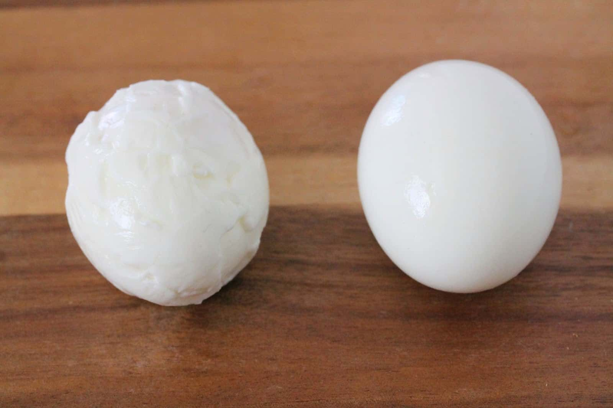

HOW TO BOIL EGGS

Directions:
- Place eggs in the bottom of a saucepan. Be sure not to crowd the eggs in the pan. They should fit comfortably.
- Fill the pan with cold water, 1 inch above the eggs.
- Bring the water to a rapid boil on the stovetop over high heat.
- Once the water comes to a boil, cover the pan with a lid and remove the pan from the heat. Do not lift the lid. Set a timer for the type of boiled egg you want, from 4 minutes to 12 minutes.
- Fill a large bowl with ice and water.
- When the eggs reach the desired cooking time, use tongs to remove the eggs from the hot water and immerse gently into the prepared ice water to cool, about 10 minutes.
- Gently tap the eggs against a hard surface and peel away the shell. Rinse the egg under cold water to remove any bits of shell and pat dry.
How many minutes should you boil your egg
- Soft Boiled (runny or very soft yolk) - 4 to 6 minutes
- Hard Boiled (solid cooked yolk) - 8 to 12 minute
Main page